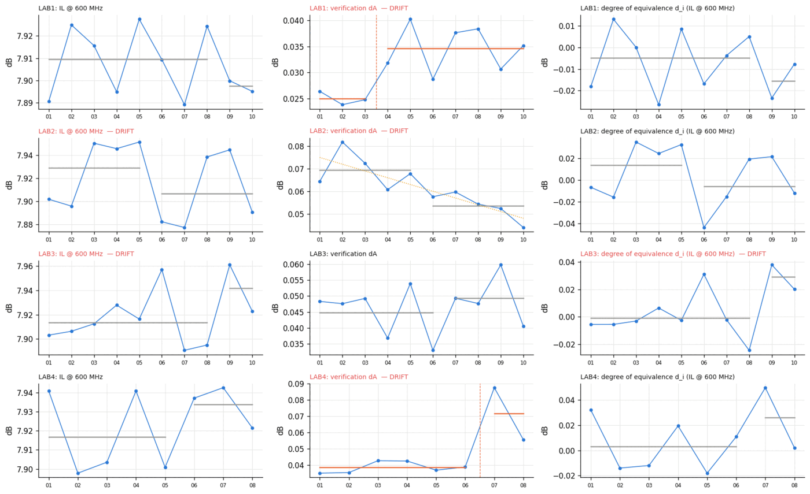
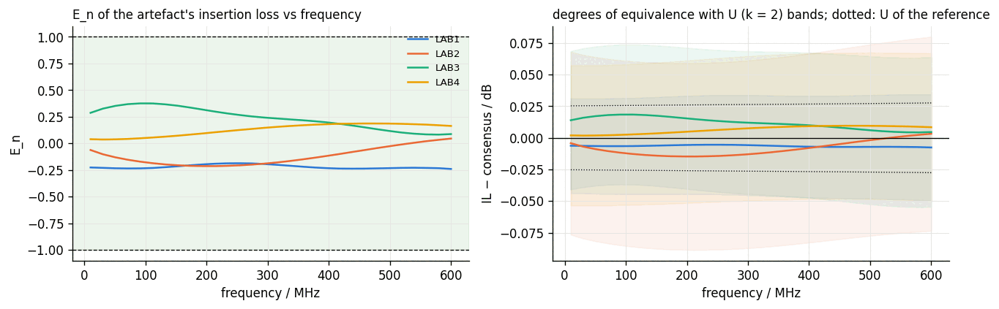

labplatform
Compares laboratories against each other, quantifies the uncertainty of every result, and detects measurement-system drift.
The problem
Two laboratories measure the same cable. Roth says 7.907 dB; Changzhou says 7.923 dB. Is that a problem? With only the two numbers, the question is unanswerable — and organisations answer it anyway, with meetings.
The correct answer requires each number to carry its uncertainty budget, so the comparison becomes a statistic instead of an argument: the sites differ by 0.016 dB against an expanded uncertainty of the difference several times larger — not distinguishable. And beyond any single comparison: is a site drifting month over month, which calibration event caused it, and which already-issued results does a failed verification put in doubt?
What was built
A metrology platform over any number of labauto laboratories — one canonical data model, and the full apparatus of interlaboratory comparison on top.
Takes
- labauto archives from any number of sites
- The circulating artefact's round-robin schedule
- Check-standard certificates for calibration verification
Produces
- An uncertainty budget on every scalar result
- Compatibility statements per site, per quantity, per round
- Repeatability, intermediate precision and reproducibility for the network
- Drift alerts with attributed root cause
- Retrospective suspect lists after a failed verification
- A self-contained dashboard
The hard part
The uncertainty budget is the engineering heart, and its hardest entries are the ones naive budgets get wrong. Reflection quantities cannot inherit the transmission calibration's bound: a −27 dB return loss measured against a −52 dB residual directivity floor carries close to a decibel of uncertainty, and the budget says so instead of flattering itself. Reproducibility must not double-count what calibration already covers, so only the between-round variance the calibration bound cannot explain enters. Every result is referred to 23 °C with the temperature coefficient's own uncertainty propagated.
The payoff is the demonstration's planted fault: one site's setup degrades quietly from round 7. The platform sees it on the site's verification chart three rounds before the laboratory's own gate refuses to measure — and when the verification finally fails, it walks the chain backwards and names the five results taken under that calibration as suspect. Detection, then retrospective traceability.

Checked against ground truth
Statistics checked against the standards' own worked values; the network checked by simulating one with a known fault.
| What was checked | Result |
|---|---|
| E_n against Cox consensus, IL @ 600 MHz, all sites | |E_n| ≤ 0.22 — all compatible |
| Nested ANOVA (ISO 5725-2), Cochran + Grubbs screening | matches worked reference values |
| Control charts | phase-I/II split, Western Electric rules on rational subgroups |
| Planted degradation at round 7 | flagged 3 rounds before the gate refused |
| Failed verification → suspect results | the 5 affected runs identified |
| Network scale exercised | 4 sites · 10 rounds · 200 jobs · 3,610 results |


What it does not claim
From the report's own limitations section:
- The four laboratories are simulated (labauto's instrument models); the statistics are exercised on data whose truth is known.
- Mismatch between test-port and cable impedance is declared unevaluated in the budget, not silently absorbed.
- Root-cause attribution is correlational against the records — it names the coinciding change, not a proven mechanism.
Where it sits in the toolchain
This is what labauto's sealed archives exist for: the platform ingests any number of them into one comparable whole. Its budgets set the default cable uncertainties in linktwin's Monte Carlo, and its trust cards are the provenance a link verdict can cite when someone asks "measured where, under what?"